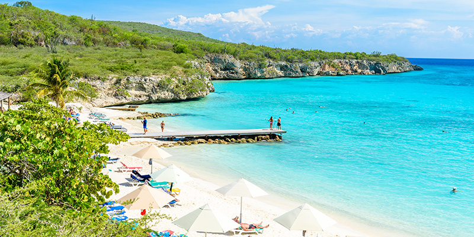
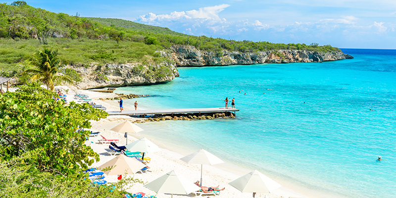
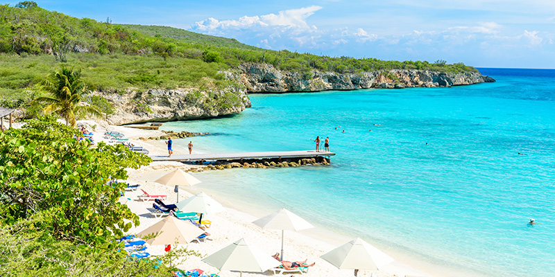

Curaçao On a vacation on Curaçao, the white beaches lined with palm
trees are present in large numbers. A beach holiday on the Caribbean Sea
meets several wishes here: from a bustling sun holiday on Mambo Beach
and Jan Thiel Bay to rest in Westpunt. Be sure to visit the colorful
Handelskade during your city trip in Willemstad or take an excursion to
the beautiful Christoffel Park. Bon bini on dushi Curacao!.
Greece You can arrange a holiday to Greece according to your own wishes
at TUI. The sun is shining and the sea is always within reach in this
southern European country. Choose one of the beautiful islands from this
holiday. From Samos, Lesvos to Zakynthos, Greece is beautiful. But the
capital Athens is also a real must-see with the Acropolis as one of the
highlights.
SPAIN A long coastline spread over several Costas, temperamental cities
such as Barcelona and Madrid, the classic Andalusia in southern Spain
and delicious tapas: if you can experience 'la buena vida' anywhere, it
is during a holiday in Spain. Due to its location on the Mediterranean
Sea, this country in southwestern Europe has been a favorite place for a
flight or car holiday to Spain for years.
Aruba Just looking for a vacation to Aruba will put a smile on your
face! The pleasant tropical temperatures and white beaches with the
unique divi divi trees form an idyllic backdrop for a sun holiday on the
Caribbean Sea. Aruba is not called 'One Happy Island' for nothing. On a
diving holiday in Aruba? Around the island you will find interesting
coral formations and the largest shipwreck in the Caribbean. good bini!
South Africa A tour of South Africa is one you will never forget. This
is the only right place in the world where you can tick off the Big
Five. In the famous Kruger National Park you will be face to face with a
lion or a herd of elephants in no time. For the best view, climb Table
Mountain in Cape Town. There is so much to see and experience here! Now
you only have to choose: a group tour or an individual trip through
South Africa?
Suriname Get to know a touch of the Netherlands under the tropical sun
during a tour in Suriname. Instead of one long route with overnight
stays, you can make day trips in this country from your hotel in
Paramaribo. From a city walk through the wooden capital to a trip with a
dugout canoe on the Suriname River towards the Amazon region. One thing
is certain: once on Surinamese soil you put the button in the no spang
mode, in other words don't worry!

 
